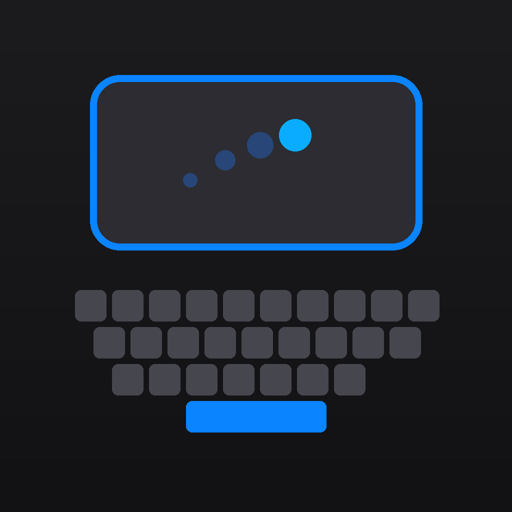

Keyboard, trackpad and shortcut deck for your Mac
Effective November 23, 2026
PadDeck does not collect, store or share any personal data. There are no accounts, no analytics, no ads and no tracking.
The Mac app receives input from your iPhone or iPad and turns it into keyboard and pointer events on your Mac. It uses the Accessibility permission only for that. It doesn't collect, store or send any data either.
PadDeck doesn't collect data from anyone, including children.
If this policy changes, the new version will be published on this page. Questions: github.com/douugr/paddeck/issues.